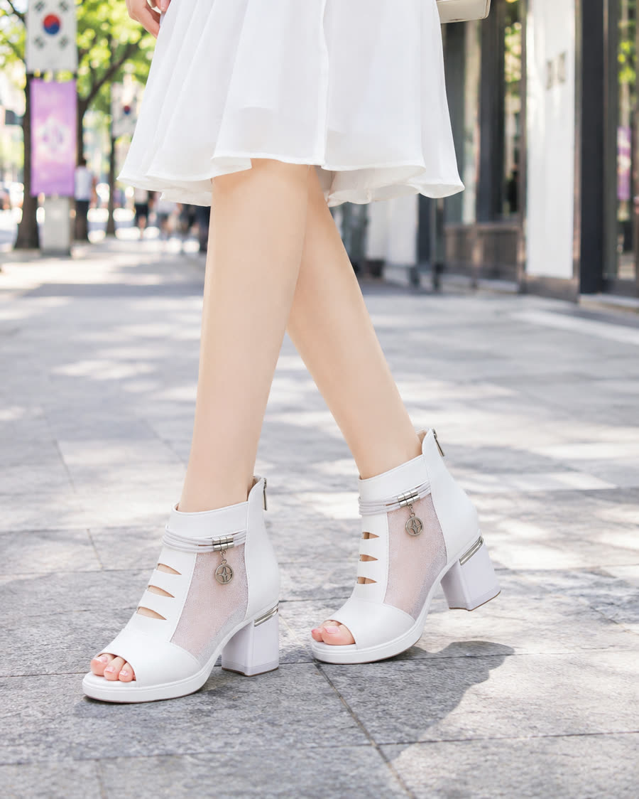

Sandal cao gót vừa 5.5cm phối lưới thoáng khí — Review JB182
Không phải lúc nào cũng cần độn cao — có khi một đôi sandal gót vừa 5.5cm, hở mũi mát mẻ, phối lưới thoáng khí lại là lựa chọn "chân ái" cho mùa hè. JB182 tôn dáng nhẹ nhàng mà đi cả ngày vẫn êm, vẫn xinh.


5.5cm — độ cao gót "lý tưởng" cho đời thường
Gót 5.5cm là mức vừa phải: tôn dáng nhẹ nhàng, tạo hiệu ứng chân thon gọn hơn nhưng vẫn giữ thăng bằng tuyệt đối. Đây là độ cao hoàn hảo để bạn đi làm, đi chơi hay dạo phố mà không lo đau mỏi như các đôi cao gót nhọn. Phần gót vuông còn giúp đứng và bước chắc chân hơn hẳn.


Ảnh thật JB182: (trái) banner gót 5.5cm · (phải) quai da PU phối lưới & gót vuông.
Da PU mềm phối lưới — mát chân cả ngày hè
Quai giày kết hợp da PU cao cấp siêu mềm và các mảng lưới dệt tỉ mỉ: vừa tạo điểm nhấn thời thượng, vừa giúp chân luôn "thở", khô thoáng và khử mùi suốt ngày dài. Kiểu hở mũi giúp đôi chân trông thanh thoát, lại tiện khoe bộ nail xinh. Đế tổng hợp siêu nhẹ, bám tốt nên mỗi bước đi đều uyển chuyển, tự tin.


Sandal gót vừa 5.5cm hợp với ai?
- Nàng công sở cần đôi lịch sự, tôn dáng nhẹ mà đứng/đi cả ngày không đau chân.
- Người ngại cao gót nhọn — gót vuông 5.5cm chắc chân, dễ đi hơn nhiều.
- Mùa hè nóng — kiểu hở mũi phối lưới thoáng khí, mát mẻ, khô ráo cả ngày.
Phối đồ với sandal hở mũi 5.5cm
- Váy maxi / váy hoa — nữ tính, bay bổng, chuẩn mùa hè.
- Quần suông công sở + áo sơ mi — thanh lịch, gót vừa đủ tôn dáng.
- Quần jeans ống đứng — hở mũi giúp tổng thể trông thanh thoát, trẻ trung.
Thích tôn dáng cao hơn? Xem thêm: giày độn 5cm high-top JB111A.
Thông số nhanh mẫu JB182
| Tiêu chí | JB182 | Ghi chú |
|---|---|---|
| Chiều cao gót | 5.5cm | Gót vuông, vừa phải, dễ đi |
| Chất liệu | Da PU + lưới | Mềm, thoáng khí, mát chân |
| Kiểu dáng | Sandal hở mũi | Thanh lịch, hợp Xuân–Hè–Thu |
| Size | 35–40 | Form chuẩn thời trang |
Câu hỏi thường gặp
Sandal gót 5.5cm đi có mỏi không?
Rất ít. 5.5cm là độ cao gót vừa phải, tôn dáng nhẹ mà vẫn giữ thăng bằng tốt; gót vuông chắc chân hơn gót nhọn nên đi làm, dạo phố cả ngày đều thoải mái.
JB182 làm từ chất liệu gì?
Quai da PU mềm phối mảng lưới dệt thoáng khí, kiểu hở mũi; đế tổng hợp siêu nhẹ, bám tốt — chân luôn khô thoáng, mát mẻ.
JB182 giá bao nhiêu, còn size nào?
Giá và size còn hàng xem trực tiếp tại trang mẫu JB182 hoặc nhắn Zalo để được tư vấn nhanh.
Muốn một đôi sandal gót vừa 5.5cm, mát chân cho mùa hè?
Nhắn Jebee size chân & phong cách bạn thích — tụi mình tư vấn mẫu JB182 trong 1 phút, freeship toàn quốc, đổi size miễn phí 15 ngày.
Nhắn Zalo tư vấn Xem mẫu JB182